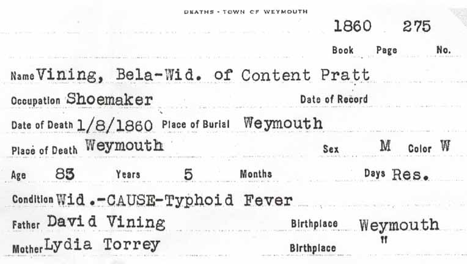

Census Data
| 1800 | 1810 | 1820 | 1830 | 1840 | 1850 | 1860 | |
| Bela Vining | ? | ? | ? | ? | ? | 73 [see note below] |
dead |
| Content (Pratt) Vining | ? | ? | ? | ? | ? | dead | |
| Hervey Vining | dead | ||||||
| Eveline Lincoln Vining | ? | ? | married [and living in separate household?] | ||||
| Eliza Ann Vining | ? | ? | ? | ? | [living? in separate household] | ||
| Maria Vining | ? | ? | ? | married and living in separate household | 42 [see note below] |
||
| Daniel Hervey Vining | ? | married [and living in separate household?] |

Death Data
Death record of Bela Vining, from Weymouth, Norfolk County, Massachusetts: